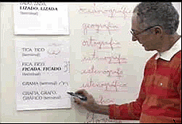
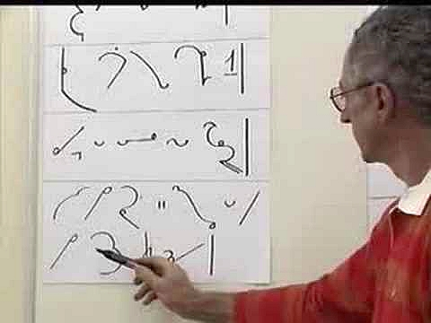
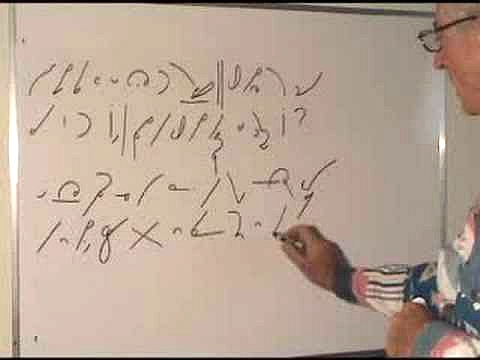
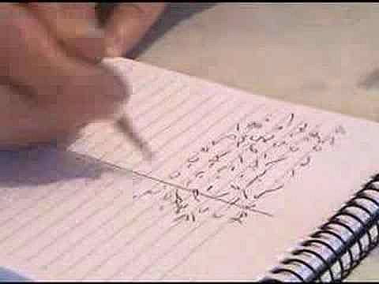

International
InternationalO przygotowaniu nauczyciela stenografii
2011-03-21 | autor: flamenco108Poniżej prezentuję chropawe tłumaczenie FAQ nt. postawy i przygotowania nauczyciela stenografii zebrane przez prof. Waldira Cury.
Na wstępie pragnę tylko zaznaczyć, że od oryginału bezwstydnie odbiegałem tam, gdzie dotyczyło to szczególnie techniki stenografowania systemem Maron, którego naucza Pan Cury.

prof. Waldir Cury
Często zadawane pytania na temat nauczania stenografii
zebrane przez
profesora Waldira Cury, emerytowanego stenografa/rewizora Zgromadzenia Legislacyjnego Rio de Janeiro, nauczyciela stenografii, członka Komitetu Edukacyjnego INTERSTENO.
Pytanie: Co jest potrzebne, by uczyć stenografii?
Odpowiedź: Poznaj do perfekcji system, którego zamierzasz uczyć. Dobrze, jeśli w ogóle lubisz i masz zdolności do nauczania, szczególnie korzystna jest skłonność do postrzegania technicznych detali nauczanego przedmiotu. Mam wielu uczniów stenografii, którzy sami są nauczycielami innych przedmiotów. Mogą skorzystać ze swojego doświadczenia przy nauczaniu stenografii. W Brazylii potrzeba ich wielu! Naprawdę, bardzo brakuje nam ludzi oddanych nauce tej sztuki.
Pyt: Czy tylko ci, którzy wcześniej pracowali jako stenografowie mogą uczyć stenografii?
Odp: Nauczyciel stenografii sam nie musi być, ani teraz, ani w przeszłości, zawodowym, praktycznym stenografem. Powinien bardzo dobrze znać system, mieć inklinacje do uczenia - to wystarczy, żeby zostać dobrym nauczycielem.
Pyt: Czy aby uczyć stenografii, samemu należy umieć pisać z odpowiednią prędkością?
Odp: Nie. Najważniejsza jest doskonała znajomość systemu i umiejętność klarownego jego prezentowania i tłumaczenia zawiłości. Poprawne przekazywanie wiedzy - to jest najważniejsze.
Pyt: Która cecha nauczyciela stenografii powinna być uznana za najważniejszą?
Odp: Dobre pytanie. Każda osoba z doświadczeniem udzieli zapewne innej odpowiedzi. Poza doskonałą znajomością systemu i umiejętnościami dydaktycznymi, sądzę, że najważniejsza jest cierpliwość. I to nie tylko u nauczyciela stenografii, dotyczy to wszystkich. Nauczyciel nigdy nie powinien okazywać zniecierpliwienia wobec pomyłek ucznia, lub kiedy słyszy pytanie, na które już udzielił odpowiedzi. Nigdy nie powinien odpowiadać “Na ten temat już mówiłem”.
Pyt: A jeśli uczeń pyta się 20 razy o to samo?
Odp: To powinien otrzymać 20 razy taką samą, poprawną odpowiedź, bez śladu zniecierpliwienia. Mam tu dobry przykład: pewna studentka uczyła się niemieckiego. Miała zwyczaj zadawać mnóstwo pytań podczas lekcji. Pewnego dnia nauczyciel się zdenerwował i odpowiedział: “Zadajesz zbyt wiele pytań!”. I ona już nigdy się go o nic nie zapytała. Nauczyciel kazał się studentce zamknąć. To wyrażone innymi słowami “zamknij się” jest najgorszym, co może się wydarzyć w procesie nauczania. Nie można sobie na to pozwolić, czy to podczas zajęć stacjonarnych, czy korespondencyjnych. Nauczyciel powinien być zawsze otwarty i odpowiadać na wszelkie pytania tak często, jak to konieczne.

Pyt: Zatem co uznamy za drugą najważniejszą cechę nauczyciela stenografii?
Odp: Powinien umieć stymulować uczniów do wysiłku. Powinien zachęcać, dodawać energii, odwagi, stymulować i wywoływać entuzjazm. Czytałem kiedyś fragment angielskiej książki o dydaktyce, gdzie nauczyciela przedstawiono jako “oswajacza” procesu uczenia się. Powiedziano tam, że nie nauczyciel uczy, lecz uczeń sam siebie, nauczyciel jedynie proces ten stymuluje.
Pyt: Jak powinna wyglądać pierwsza lekcja stenografii? Co powinno się na niej przekazać?
Odp: Każdy nauczyciel opracuje tu swoją strategię. Ja mogę tylko zasugerować, by zacząć od zagajenia, czym w rzeczy samej jest stenografia, wyjaśnić etymologię pojęcia, różnicę pomiędzy zwykłymi notatkami ze skrótami a stenografią. Dobrze też napisać kilka odpowiednich symboli, by pokazać, skąd się wziął nauczany system. Myślę, że pięć do dziesięciu minut takiej prezentacji mogłoby być interesujące. Następnie powinno się pokazać znaki z pierwszej lekcji i natychmiast ich użyć do zapisania odpowiednich słów. Następnie od razu przejść do dyktanda w bardzo powolnym tempie, na które złożą się właśnie zaprezentowane słowa, które uczniowie od razu nauczą się pisać stenograficznie.
W systemie Marona zwykle pokazuję na początku osiem znaków, tych najpotrzebniejszych. Na następnych studenci otrzymują zaledwie po dwa znaki na lekcję.
Zatem na pierwszych zajęciach uczeń otrzymuje tabelkę z pierwszymi ośmioma znakami i objaśnieniem, jak powinny być napisane. Skoro nie miał czasu dobrze się ich nauczyć, podczas dyktanta oczywiście może korzystać ze ściągi. Najważniejsze na pierwszej lekcji jest spowodowanie, by student poczuł, że naprawdę może pisać słowa przy pomocy innego pisma, niż przywykł od dziecka.

Pyt: Co jeszcze powinno się wydarzyć na pierwszej lekcji?
Odp: To zależy od kreatywności nauczyciela. Należy zwrócić uwagę na reakcje studentów wobec każdego napisanego znaku, to znaczy, czy nie wyglądają dla nich zbyt obco, czy nie wydają się trudne do nauczenia. Można napisać kilka słów dodatkowo jako ciekawostkę, można pokazać, jak należy je czytać, zachęcić do zapisania ich. Zadanie, jakie studenci naprawdę lubią, to dopasowywanie. Piszę w jednej kolumnie słowa stenograficznie, w drugiej pismem długim. Uczniowie powinni je do siebie dopasować. Na początek to daje pozytywne efekty.
Ideałem byłoby przekształcić każdą lekcję w radosne, zabawne doświadczenie. Bardzo ważne jest zwracanie uwagi studentom na właściwą postawę ciała podczas pisania. Dobrze jest zachęcać ich do poprawnego trzymania pisaka, nie przyciskania zbyt mocno do papieru. Wady postawy i chwytu mogą przynieść wiele bólu podczas długich sesji stenografowania, nie wspominając już o zmniejszeniu prędkości.
Pyt: Jeżeli uczeń ma poważne trudności już na pierwszej lekcji, czy ma sens przechodzenie z nim do drugiej lekcji?
Odp: Tak, ponieważ na następnej, wedle mojej metody, dostanie tylko dwa następne znaki. Poza tym na drugiej lekcji przecież w użyciu będą nie tylko te dwa znaki, ale i osiem z pierwszej. W ten sposób nauka się kumuluje. Osiem znaków z pierwszej lekcji zostanie użyte na drugiej, osiem z pierwszej i dwa z drugiej na trzeciej i tak dalej. Najważniejsze, na co trzeba zwrócić uwagę, to właściwe dozowanie wiedzy na każdych zajęciach. Nie należy forsować nauki. W wypadku stenografii przetrenowanie nie przynosi korzyści. Właściwe dawkowanie wiedzy jest kluczem do nauki szybkopisania.
Pyt: Jeżeli student ma poważne trudności z przyswojeniem danego znaku, co należy zrobić?
Odp: Zdarza się to czasami, zwykle w przypadku bardzo podobnych znaków i różnych znaczeniach, lub brzmieniach. W takim wypadku nauczyciel powinien zaproponować jakąś “mnemoniczną sztuczkę”, która pomoże studentowi odróżnić i nauczyć się znaków, lub ostatecznie należy wyznaczyć więcej ćwiczeń zawierających znaki powodujące trudności.
Oto przykład takiej “mnemonicznej sztuczki”: w systemie Marona mamy dwa znaki, które mogą sprawić kłopot, są to “g” i “d”. Pierwszy jest półokręgiem lewym, drugi prawym. Jeżeli zamkniemy półokrąg “d” prostą kreską, pokaże się nam drukowane, wielkie “D”. W ten sposób można sprzedać klucz do rozwiązania problemu.
Pyt: Niektórzy studenci nie mają żadnych problemów ze stenografowaniem, lecz bardzo słabo wychodzi im czytanie i tłumaczenie stenogramów. Co w takim wypadku należy zrobić?
Odp: To bardzo częste. Bardzo korzystne będzie rozpoczęcie ćwiczeń z czytania już na pierwszej lekcji, nawet jeśli dotyczyć to będzie pojedynczych słów. Zwykle daję takie ćwiczenie: piszę dwa znaki obok siebie i proszę studentów, by spróbowali wywnioskować, ile z takiego zestawienia można odczytać słów. Na przykład napiszę stenograficzne “b” i “t”. Ponieważ w systemie Marona nie używa się samogłosek wewnątrz wyrazów, proszę uczniów o ich uzupełnienie, by nadać tym znakom pełne brzmienie. W ten sposób można z dwóch znaków stworzyć słowa: bat, bit, but, byt… Poprzez taką zabawę mam szansę pobudzić ciekawość uczniów i dać satysfakcję z wypełnionego zadania. Im więcej zabaw tego rodzaju, tym lepiej.
Pyt: A kiedy uczeń zakończy kurs teoretyczny systemu, jaką najlepiej przyjąć strategię ćwiczenia prędkości?
Odp: Jest na to kilka sposobów i każdy nauczyciel pozna je wszystkie, polubi jedną. Ja zmieniałem metodykę kilka razy, poszukując tej najlepszej, a wreszcie ułoży kilka z nich po kolei, jak kroki na ścieżce. Moja pierwsza metoda polega na przepisywaniu tekstów. Kopie poprawiam, a jeżeli jest w nich dużo błędów, to uczeń pisze dany tekst jeszcze raz i jeszcze raz, aż do skutku. To trwa około miesiąca. Zaraz później zaczynam minutowe dyktanda. Na początku prowadziłem je z prędkością 40 słów na minutę. Z biegiem czasu zmniejszyłem prędkość pierwszych dyktand do 30 słów na minutę i zwiększałem stopniowo prędkość od 30, przez 35, do 40 słów na minutę.
Później zdecydowałem się jeszcze spowolnić pierwsze dyktando - do 20 słów na minutę. Studentom bardzo się to podobało, a ja zauważyłem, że piszą dokładniej, ładniej i z mniejszym napięciem. Tę metodę utrzymuję do dziś, uzupełniłem ją tylko o, jak je nazwałem, “audio-przepisywanki”. Są to bardzo powolne dyktanda, z prędkością 15 słów na minutę. To praktycznie przepisywanie tekstu, lecz przecież uczeń pisze ze słuchu, a to poważna różnica.

Pyt: Co studenci myślą o Twojej metodzie?
Odp: Naprawdę im się podoba. Bo naprawdę działa! Osiągnięcie dużej prędkości stenografowania odbywa się przez długi szereg “małych zwycięstw”. Kiedy zadanie jest łatwiejsze, “bitwa” prostsza, “zwycięstwo” jest pewne.
To bardzo istotne, by uczeń dużo powtarzał słów trudnych, przepisywał wszelkie skróty i znaczniki, uczył się ich na pamięć, zanim podejdzie do pierwszej “audio-przepisywanki”, lub innego dyktanda. Do każdego powinno być oddzielne przygotowanie. W ten sposób student stopniowo rozwinie prędkość nie tracąc precyzji i opanowania zasad systemu.
Pyt: Czy lepiej jest stopniować prędkość pisania co pięć, czy co dziesięć słów na minutę?
Odp: O wiele lepsze jest zwiększanie prędkości o pięć słów niż o dziesięć. W ten sposób stopniujemy prędkość od 20wpm (słów na minutę, words per minute), przez 25wpm, 30wpm i tak dalej. Dlaczego nie stopniować co dziesięć słów? Zachodzi tutaj pewien paradoks: prędkość stenografowania wynika z pracy mózgu. Uczeń słyszy słowo i zapisuje je stenograficznie - najpierw w umyśle, a dopiero później, przez koordynację ręka-oko, jego ręka pisza na papierze właściwe znaki, które wcześniej musiał wyprodukować umysł. Zręczność manualna z precyzją ruchów ręki zależy wprost od móżdżku. Zatem kiedy student ćwiczy 20wpm, jego mózg wytwarza odpowiednie “połączenia” pomiędzy neuronami, by sprostać zadaniu. Po kilku takich treningach mózg jest gotów do stenografowania z prędkością 20wpm. Zmiana prędkości o 5 słów, do 25wpm, wymaga tylko niewielkiej korekty już utrwalonych “ścieżek”. Zmiana nagła, o 10 słów, do 30wpm z 20wpm, to mała rewolucja grożąca przetrenowaniem. W ciągu pięciominutowego dyktanda oznacza to różnicę 50 słów więcej! To zbyt wiele!
Pyt: Zatem lepiej jest dozować przyspieszenie powoli?
Odp: Dokładnie. Lepiej pracować małymi porcjami, ale stale, w odmierzonych, codziennych odcinkach. W ten sposób właśnie żółw może prześcignąć zająca.
Pyt: Jak wiele czasu potrzeba, by przekroczyć kolejną granicę prędkości?
Odp: Bardzo to zależy od studenta i, oczywiście, od czasu, który poświęca na codzienne ćwiczenia.
Pyt: Skąd wiesz, kiedy należy rozpocząć ćwiczenia z większą prędkością?
Odp: Zwykle korzystam z następującego planu: Jeżeli student ćwiczy z prędkością 60wpm, proszę go napisanie i odczytanie trzech testowych dyktand z tą prędkością, każde innego dnia. Jeżeli zda wszystkie trzy “egzaminy” z liczbą błędów poniżej 10%, może zacząć ćwiczyć 65wpm. Dlaczego trzy testy, a nie jeden? Ponieważ gdybym użył zaledwie jednego dyktanda, mógłbym dać się zmylić. Może dane dyktando było akurat dla niego zbyt łatwe? Zatem trzy różne testy zwiększają precyzję pomiaru. Dają pewność, że uczeń jest naprawdę gotowy przejść do następnego etapu.

Pyt: Czy to prawda, że przekroczenie każdej kolejnej granicy prędkości zajmuje coraz więcej czasu?
Odp: To prawda. Przejście od 20wpm do 25wpm jest o wiele łatwiejsze niż ze 120wpm do 130wpm. To wynika z rachunków:
W pięciominutowym dyktandzie z prędkością
- 20wpm zawiera się 100 słów
- 30wpm zawiera się 150 słów
- 120wpm zawiera się 600 słów
- 130wpm zawiera się 650 słów
do napisania stenograficznie. Zauważcie, że liczba słów do przetworzenia przez umysł z prędkością 130wpm jest fantastyczna, odpowiada ponad dwóm słowom na sekundę!
Możemy to porównać do wspinaczki po drabinie, gdzie każdy kolejny szczebel stoi w większej odległości od poprzedniego. Im wyżej wejdziemy, tym więcej wysiłku musimy włożyć w każdy kolejny krok.
Pyt: Co z wkuwaniem, powtarzaniem słówek? Czy to naprawdę konieczne?
Odp: To bardzo ważne, podstawowe ćwiczenie! Po każdym dyktandzie ćwiczebnym uczeń musi pokazać i zaznaczyć słowa i znaczniki, które sprawiają mu największą trudność. Następnie powinien je wypisać oddzielnie i ćwiczyć przez kilka następnych dni. To pozwala zmniejszyć liczbę potknięć podczas pisania. Wahanie bardzo zmniejsza prędkość pisania, z powodu jednego słowa tracimy całe dyktando.
Pyt: Kiedy student kończy naukę stenografii?
Odp: Nigdy. Ćwiczenie stenografii to jak gra na instrumencie muzycznym - musi być stale kultywowana, ciągle trzeba ćwiczyć i rozwijać umiejętności. Nie ma tutaj punktu końcowego.
Na koniec linkuję jeden z filmików, które profesor umieścił w Internecie, żeby wszyscy mogli zobaczyć skuteczność metody Maron. Czy to po portugalsku, czy po polsku, efekt i tak poraża.
2011-03-21 autor: flamenco108